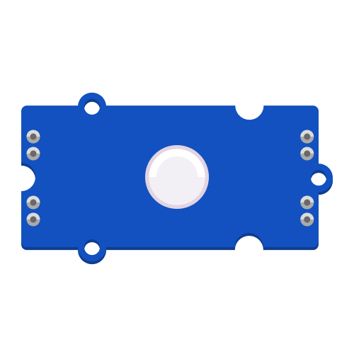

A light source that can produce RGB colored light. Can be daisy chained.
More detailed information is available on the Seeed Studio Wiki.
Before proceeding, make sure your LED module looks like the illustration above. If you are not sure if this is the correct version, refer to this overview.
Each connector on the BitsyExpander Board provides connections to two pins. As most components only need one pin to work, the second pin is often shared with another connector. To use this type of Chainable LED component, ensure it is attached to a connector with two available pins. Ensure you avoid using another connector that shares pins with the one you use for the Chainable LED.
Confirm that the Chainable LED module is oriented correctly, with the input port (marked “IN”, at the base of the arrow) connected to the Grove connector on your BitsyExpander Board or the previous LED in your chain.
Grove Chainable RGB LEDs are based on the P9813 LED driver chip. To easily control them in code, the P9813 library is needed. If this LED type came bundled with your kit, the library should be pre-loaded on your ItsyBitsy Microcontroller.
Otherwise, follow the following steps:
p9813.py file in the lib folder on the CIRCUITPY drive of your ItsyBitsy Microcontroller.You can verify that the library is installed by ensuring a file called p9813.py is present in the lib folder of your CIRCUITPY drive. You can learn more about libraries and their use in the Glossary or the Tutorials.
The examples below assume your component is connected to pins D13 and D10, contained in the connector labeled D13 on the BitsyExpander Board.
This example uses the fill() function to set the brightness of each color channel (RED, GREEN, BLUE) to a value between 0 to 255. The value 0 corresponds to off, while 255 means fully on. A bright red LED, for example, is defined by (255, 0, 0). (255, 255, 255) will make the LED appear white, while (0, 0, 0) will turn it off. Use values between 0 and 255 to vary the brightness level and mix different colors.
During the setup phase, the reset() function is called to ensure all LEDs are off on startup. The write() function is called to display the new colors previously defined using fill().
# --- Imports
import time
import board
import p9813
# --- Variables
pin_clk = board.D13
pin_data = board.D10
num_leds = 1
leds = p9813.P9813(pin_clk, pin_data, num_leds)
# --- Functions
# --- Setup
leds.reset()
# --- Main loop
while True:
print("ON")
leds.fill((0, 0, 255))
leds.write()
time.sleep(1)
print("OFF")
leds.fill((0, 0, 0))
leds.write()
time.sleep(1)
This example uses a for loop to increase and decrease the brightness of an LED on each run through the loop. The sleep() function is used to slow down the speed at which the loop iterates.
# --- Imports
import time
import board
import p9813
# --- Variables
pin_clk = board.D13
pin_data = board.D10
num_leds = 1
leds = p9813.P9813(pin_clk, pin_data, num_leds)
delta = 5
# --- Functions
# --- Setup
leds.reset()
# --- Main loop
while True:
print("Fading in...")
for intensity in range(0, 255, delta):
leds.fill((0, 0, intensity))
leds.write()
time.sleep(0.05)
print("Fading out...")
for intensity in range(255, 0, -delta):
leds.fill((0, 0, intensity))
leds.write()
time.sleep(0.04)
Using the sleep() function to set the fading speed will prevent other code from executing while sleeping. This is called a blocking delay and does not work well when multitasking. You can read Adafruit’s tutorial on Multitasking with CircuitPython to learn about a non-blocking alternative.
This example demonstrates how to address individual LEDs in a chain. As before, the reset() function turns all LEDs off, while fill() can set the entire chain to the same color. To specify a color for each LED individually, refer to the code below. Note that LEDs are indexed starting from 0, which refers to the first LED in the chain.
Remember to use the write() function to write the newly defined color values to the LED chain.
# --- Imports
import time
import board
import p9813
# --- Variables
pin_clk = board.D13
pin_data = board.D10
num_leds = 3
leds = p9813.P9813(pin_clk, pin_data, num_leds)
# --- Functions
# --- Setup
leds.reset() # turn off all LEDs
# --- Main loop
while True:
# set color values for the LEDs individually
leds[0] = (255, 0, 0) # red
leds[1] = (0, 255, 0) # green
leds[2] = (0, 0, 255) # blue
leds.write()
time.sleep(2)
# set a color value for all LEDs at once
leds.fill((255, 0, 0))
leds.write()
time.sleep(2)